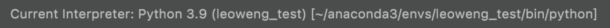
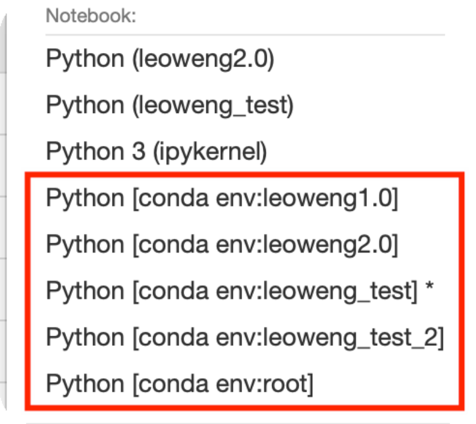
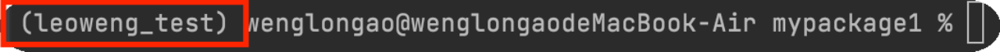
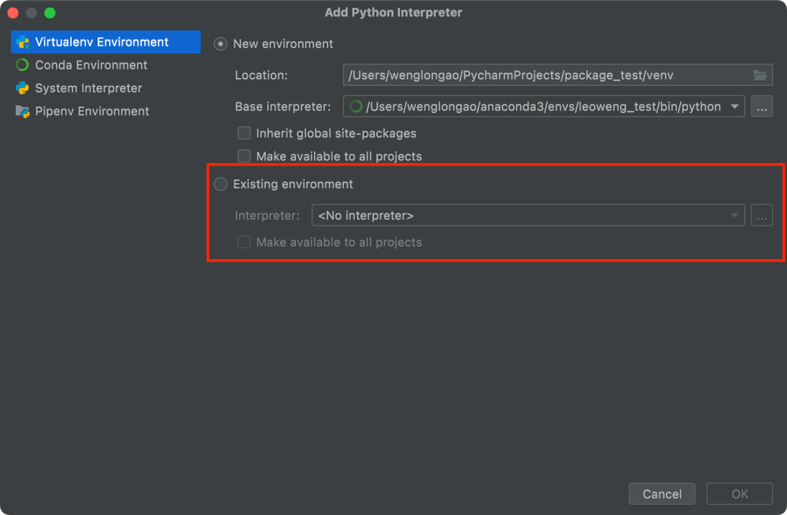
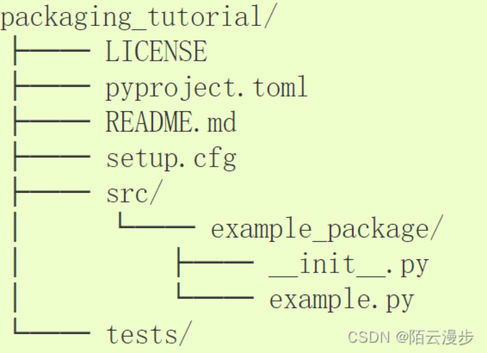
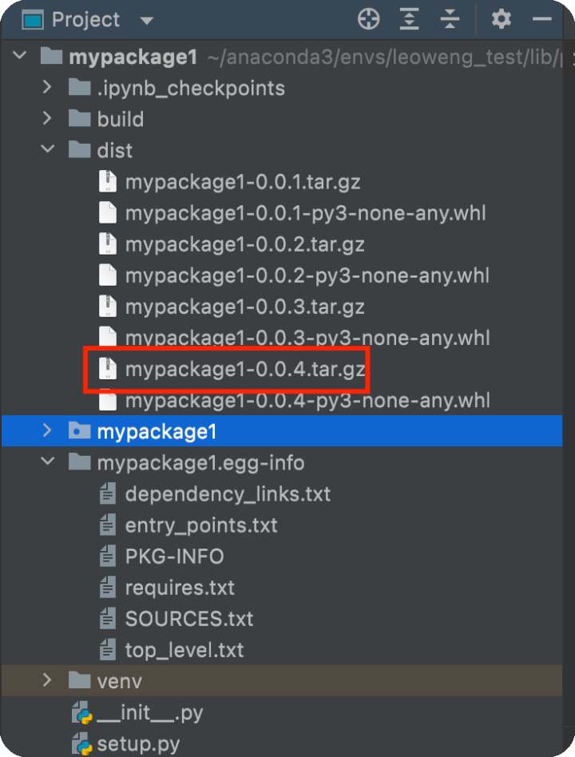
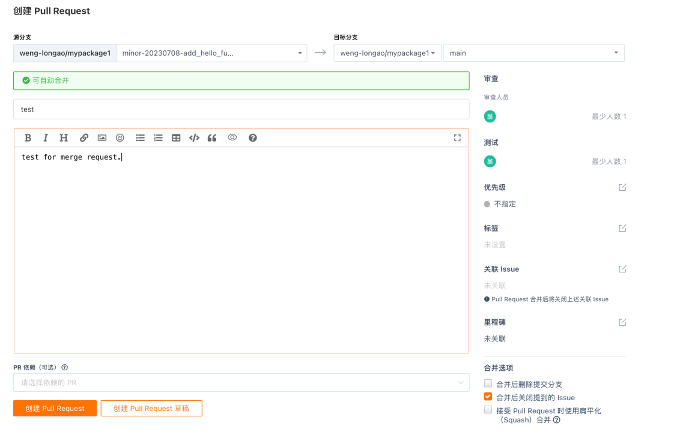
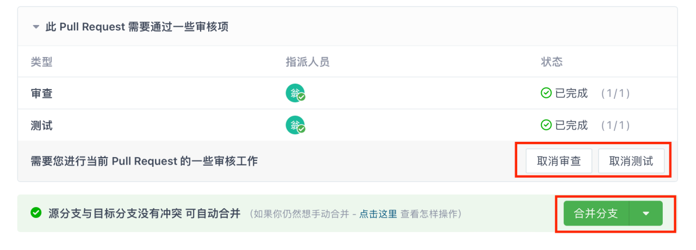
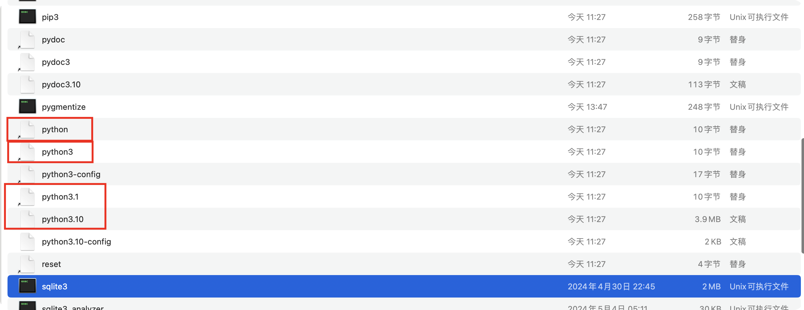

开发环境配置及开发流程
利用pycharm和anaconda搭建开发环境
1. 测试环境
在anaconda中创建测试环境leoweng_test，然后在jupyter notebook的kernel中加入测试环境，命名为leoweng_test， 这样就可以在notebook中对环境进行测试同时完成开发。
2. 生产环境
同样的步骤创建leowengx.x，目前为4.1版本(leoweng4.1)

conda install ipykernel 安装ipykernel
sudo python -m ipykernel install --name tf 在ipykernel中安装当前环境
注意：以上通过python -m ipykernel install 命令手动将jupyter notebook的kernel连接到虚拟环境，可能会失效，
建议直接conda install nb_conda，然后重启notebook，notebook的kernel就会自动连接虚拟环境。conda env:开头的就是自动连接的，
有多少的虚拟环境都会自动创建对应个数的notebook kernel。

附
1. 安装tensorflow方法
2. Mac安装带有MPS加速的torch的方法
3. pycharm环境配置
在pycharm中，选取anaconda中的python interpreter，然后就可以通过pycharm的terminal来管理和操作anaconda中创建的环境。 check以下开头是否为虚拟环境名称：  在existing environment中添加创建好的虚拟环境（如leoweng_test） 
4.在本地发布package
- 打开pycharm，在site-package路径中创建新的project，命名为自己想要的包名称。这里指定site-package路径是为了能让site-package路径中具有
py文件，和其他package统一。创建好至少三个py文件，具体结构参考下图、psapmdata以及mypackage1。其中init文件的作用是使得
python interpreter知道这个路径下是python package，因此需要在每个py的同级目录下都放一个init文件，init文件可以为空（但是最好有import，
具体参考包和模块的说明）。setup文件的参数等参考下表

以及
这篇blog。
- 确保pycharm环境切换至想要发布package的环境，在pycharm terminal中输入python -m build（或者python setup.py bdist_wheel sdist），然后会看到生成一些文件，关注dist文件夹中的.tar.gz文件，代表着源码分发包，我们通常利用这个文件来install package。
- 选择文件名称，运行pip install dist/mypackage1-0.0.4.tar.gz，此时package已经发布在本地，并且可以被pip识别。（pip list or pip show can be used for test.）
- 如果迭代版本，那么需要在setup.py中修改版本号，然后再次重复步骤发布package。 
- 注意：这篇文章有部分不够完善的地方，具体package的结构请参考lwpackage，同时需要注意__init__.py文件 5.git配置及利用git开发的流程
-
概述
假设我们从零开始开发，那么最好的步骤是先在远程创建一个仓库，然后克隆到本地，在本地完成开发后push到远程并且合并远程分支。 -
具体流程
1.在远程手动创建一个仓库，添加README等文件。 2.创建git本地仓库（repo）路径 ~/work_repo。 3.在pycharm clone 远程仓库，选择本地仓库（directory）路径，配置python interpreter, checkout新的分支开始开发。
4.开发完成后在pycharm中push，同时在gitee提交pull request。 
5.审查和测试人员审核merge request, 并且合并分支。 
6.在pycharm本地pull最新的远程main，本地main也被更新，完成远端仓库和本地仓库的更新。
7.目前为止，本地的操作都是在repo中进行的，而本地环境中的相关package并没有更新。因此，最后我们更新本地环境中的package。首先，python -m build生成.tar.gz文件，然后在本地环境下install。例如，
pip install file://Users/wenglongao/work_repo/mypackage1/dist/mypackage1-0.0.5.tar.gz
Anaconda虚拟环境管理说明
在Anaconda中，每个虚拟环境下都会创建一个自身的python解释器。例如，在torch环境下的python解释器就在/Users/wenglongao/anaconda3/envs/torch/bin路径下。
在bin目录下，有很多个python文件，其中一些是替身，一些是文稿。

目前发现的规律是，使用conda create -n torch python=3.10创建新虚拟环境，则python3.10为文稿，其它的python文件为替身，替身实际上是一个符号链接，
链接指向真正的python解释器(python3.10)。如果在此路径下使用readlink -f ./python来查看符号链接指向的路径，就会发现返回的路径是/Users/wenglongao/anaconda3/envs/torch/bin/python3.10，
代表真正的python解释器路径。
Anaconda通过自动创建多个替身文件，使得我们可以直接使用python运行命令，即python test.py、python3.10 test.py是等价的。
参考文章
https://blog.csdn.net/weixin_42345113/article/details/106444312
https://blog.csdn.net/xx_xjm/article/details/128762190
https://blog.csdn.net/lslxdx/article/details/73131664
debug：
https://blog.csdn.net/donaldsy/article/details/103515752
发布package & setup.py reference： https://blog.csdn.net/weixin_43940314/article/details/128349554
https://blog.csdn.net/weixin_49891576/article/details/129745519
包和模块的说明 https://blog.csdn.net/a15608445683/article/details/127926233
http://www.ujiuye.com/wenda/2023/72725.html